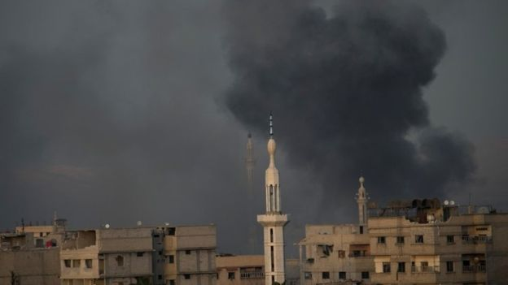
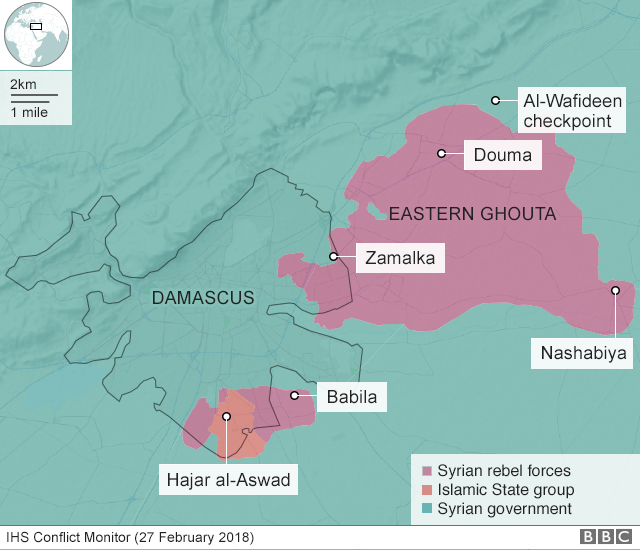

Media caption"At least in heaven there's food": The children caught up in Eastern Ghouta air strikes
Residents are reported to be fleeing the rebel-held Eastern Ghouta enclave in Syria as the situation there was described as "beyond critical".
Syria's military appears to be advancing on several fronts as it tries to retake the enclave just to the east of the capital, Damascus.
Government forces have now taken 25% of the area, UK-based Syrian Observatory for Human Rights monitors say.
A UN aid convoy planned for Sunday has not been able to enter the enclave.
The fighting since 18 February has left more than 600 people dead, many of them children.
How bad is the humanitarian situation?

Neither a daily five-hour truce ordered by the Russians - Syria's main backers - nor the ordering of a nationwide ceasefire by the UN Security Council have led to any humanitarian relief for the enclave.
The UN says that the "collective punishment of civilians is simply unacceptable".
The organisation said it had failed to obtain permission from Syrian officials to allow 40 trucks carrying humanitarian supplies to enter the key town of Douma.
More than 600 people have been killed in the past week in the Eastern Ghouta
"Instead of a much-needed reprieve, we continue to see more fighting, more death, and more disturbing reports of hunger and hospitals being bombed," UN regional humanitarian co-ordinator Panos Moumtzis said.
Some 393,000 people are trapped in the besieged enclave.
Where are people fleeing to?
Opposition sources and journalists on the ground say that hundreds of people have been fleeing the bombardment of Beit Sawa, south of Douma and on the eastern edge of the densely populated centre of the Eastern Ghouta. The enclave is an agricultural region about the size of Manchester in the UK.
Residents, many of them women and children, are reported to have fled into the centre of the enclave to seek shelter. Fighting has intensified in Beit Sawa between government forces and the Islamist faction Jaysh al-Islam.
The Eastern Ghouta is dominated by Jaysh al-Islam. But Hayat Tahrir al-Sham, a jihadist alliance led by al-Qaeda's former affiliate in Syria, also has a presence there.
A resident speaking to the BBC described the situation in the Eastern Ghouta as "beyond critical".
What is the Syrian government's aim?
Several reports suggest government forces are attempting to cut the region in two.
Syrian state media say the army has advanced on several fronts, and has taken control of villages and farms while attacking from the eastern side of the enclave.
The Syrian observatory said regime forces were 3km (two miles) from Douma.
The military has been accused of targeting civilians, but it says it is trying to liberate the region, one of the last rebel strongholds, from those it terms terrorists.
US President Donald Trump and UK Prime Minister Theresa May agreed in a phone call on Sunday that Syria and its Russian backers bore responsibility for the "heart-breaking human suffering", Downing Street said.
The leaders agreed that Russia must act now to persuade the Syrian government to stop the bombing.
